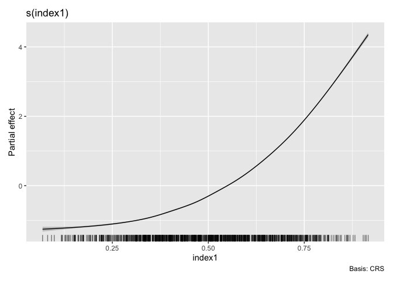

The R package smimodel provides functions to estimate Sparse Multiple Index (SMI) Models for nonparametric forecasting/prediction. The SMI Modelling algorithm simultaneously performs optimal predictor selection (hence “sparse”) and predictor grouping, enabling parsimonious forecasting/prediction models in a high-dimensional context.
The package also includes functions to fit some benchmark comparison methods namely nonparametric additive model with backward elimination, group-wise additive index model and projection pursuit regression. These functions are designed to have a similar syntax and output format for convenient usage and interchangeability.
Additional Functionalities:
Furthermore, the smimodel package provides functions to generate prediction intervals to estimate uncertainty of the point forecasts produced by the SMI model and given benchmark models in time series forecasting problems. The classical Block Bootstrap method and a novel method named Conformal Bootstrap, which is a natural integration of block bootstrap and classical split conformal prediction, are implemented as prediction interval generation methods through a general online updating procedure as introduced by Wang and Hyndman (2024) (https://arxiv.org/pdf/2410.13115).
Installation
You can install the the development version of smimodel from GitHub with:
# install.packages("pak")
pak::pak("nuwani-palihawadana/smimodel")Other Required Software
Gurobi Solver
The estimation of SMI model is based on an iterative procedure that is developed using Mixed Integer Programming (MIP) to solve an L0 and L2-regularised nonlinear least squares optimisation problem with linear constraints. We use the commercial MIP solver Gurobi to solve the mixed integer programs, as it is the fastest and the most powerful MIP solver currently available. Hence, the users of smimodel are required to have an active installation of Gurobi in their local machines.
License
Since Gurobi is a commercial software, the users need to obtain a license for Gurobi before they can install/use it.
Gurobi provides free license for academics affiliated with recognised educational institutions. Hence, if you are an academic, you can register for a free account with your verified institutional email, and then request a free academic license. If you are not affiliated with a recognised educational institution, you might need to purchase a license for long term use. However, you can obtain a free 30-day trial by requesting for an evaluation license.
Installation
Fortunately, Gurobi provides comprehensive documentation regarding installation as well as usage, and provides active support at the Gurobi Help Center.
For step-by-step instructions on software installation and license activation process, go to this link. Note that the procedure for installing Gurobi depends on the operating system that you are using in your local machine. The platform-specific instructions can be found here.
R Package “gurobi”
Once Gurobi solver is installed in your local machine, next you need to install the Gurobi R interface through “gurobi” R package, to use gurobi within R. This package is not available on CRAN, and is exclusively distributed with the Gurobi software suite. The instructions on how to install the gurobi R package are provided here.
Example
This is a basic example, which shows you how to estimate a SMI model, and obtain predictions on a test set:
library(smimodel)
library(dplyr)
library(ROI)
library(tibble)
library(tidyr)
library(tsibble)
# Simulate data
n = 1205
set.seed(123)
sim_data <- tibble(x_lag_000 = runif(n)) |>
mutate(
# Add x_lags
x_lag = lag_matrix(x_lag_000, 5)) |>
unpack(x_lag, names_sep = "_") |>
mutate(
# Response variable
y1 = (0.9*x_lag_000 + 0.6*x_lag_001 + 0.45*x_lag_003)^3 + rnorm(n, sd = 0.1),
# Add an index to the data set
inddd = seq(1, n)) |>
drop_na() |>
select(inddd, y1, starts_with("x_lag")) |>
# Make the data set a `tsibble`
as_tsibble(index = inddd)
# Training set
sim_train <- sim_data[1:1000, ]
# Test set
sim_test <- sim_data[1001:1200, ]
# Index variables
index.vars <- colnames(sim_data)[3:8]
# Estimate SMI model (with "PPR" initialisation)
smimodel_ppr <- model_smimodel(data = sim_train,
yvar = "y1",
index.vars = index.vars,
initialise = "ppr")
# Fitted SMI model
smimodel_ppr$fit[[1]]$best
# Plot estimated smooths
autoplot(object = smimodel_ppr)
# Obtain residuals and fitted values
augment(x = smimodel_ppr)
#> # A tibble: 1,000 × 3
#> Index .resid .fitted
#> <int> <dbl> <dbl>
#> 1 6 0.0859 0.495
#> 2 7 0.0766 0.737
#> 3 8 0.137 3.70
#> 4 9 0.0173 1.15
#> 5 10 0.118 0.942
#> 6 11 -0.201 3.65
#> 7 12 -0.0471 1.83
#> 8 13 0.0111 1.28
#> 9 14 -0.0464 2.46
#> 10 15 0.0243 0.261
#> # ℹ 990 more rows
# Obtain predictions on the test set
predict(object = smimodel_ppr, newdata = sim_test)$.predict